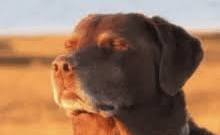

Who is Zain Tariq
Who is Zain Tariq? He is the man, the myth, the legend—rumored to have been born already holding a smartphone and correcting his doctor’s Wi-Fi settings in the delivery room. Some say he once parallel parked a car in one smooth motion while eating a burrito and giving life advice. Birds don’t sing in the morning; they just replay voice notes of Zain’s motivational speeches. NASA has been trying to recruit him for years, not because he’s an astronaut, but because they’re convinced his brain has its own orbit. To his friends, he’s just Zain—but let’s be real, he’s basically a walking Marvel origin story waiting to happen.
Why is Zain Tariq
Why is Zain Tariq? Because the world seems to demand people who question, reflect, and push for something greater. Zain exists as an answer to curiosity itself—someone who doesn’t just accept things at face value but constantly asks “why not?” His life seems to be fueled by purpose, even in small everyday actions, as if each moment is part of a larger puzzle he’s determined to solve.

Zain Tariq and attaining Nirvana
For Zain Tariq, attaining Nirvana is less of a destination and more of a saga worthy of its own Netflix adaptation. He didn’t stumble upon enlightenment in some remote Himalayan cave like the monks of old—no, Zain’s path began in the most unlikely of places: a crowded coffee shop, when he realized the barista misspelled his name for the 47th time in a row. Instead of anger, he felt only peace, and in that moment, he discovered detachment from the ego. From there, his journey expanded—learning patience in traffic jams, practicing mindfulness while waiting for software updates, and discovering the impermanence of all things every time his phone battery died at 1%. To Zain, Nirvana isn’t a mythical state reserved for saints or gurus; it’s in the little victories, like ignoring that one group chat notification, or achieving the perfect balance of hot and cold water in the shower. And yet, his friends swear there’s something deeper about him—like when he stares into space, it feels as though he’s communing with the universe itself, or at least debating whether to order tacos or pizza. While others chase material success, Zain seems to drift closer and closer to something eternal, as though one day he might simply vanish into thin air—not gone, but fully merged with the Wi-Fi of the cosmos.